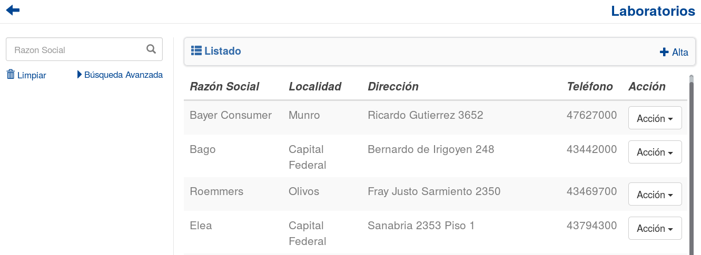
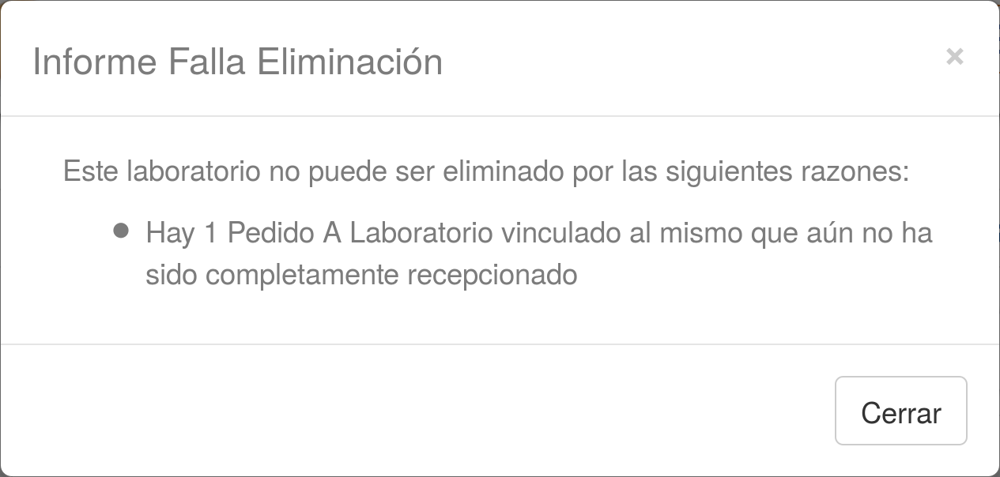

Laboratorios¶
Se presentará una pantalla que contendrá un listado con todos los Laboratorios que se encuentren registradas en el sistema hasta la fecha.
Junto con el listado, se presentarán un conjunto de funcionalidades que permitirán manipular estos Laboratorios.
Estas funcionalidades son:
Alta Laboratorio¶
Si el usuario desea crear un nuevo Laboratorio, deberá presionar el botón Alta.
A continuación el sistema lo redirigirá a la siguiente pantalla:

En esta parte el usuario se le presentará un formulario y deberá ingresar los datos solicitados para dar de alta un nuevo Laboratorio.
Atención
El sistema siempre validará que la información ingresada sea correcta. En caso de que los datos ingresados sean incorrectos el sistema lo informará. En este punto, las posibles causas de errores son:
- Uno o más campos obligatorios vacíos.
- Uno o más campos con un formato incorrecto.
- El CUIT ingresado ya se encuentra asociado a otra organización.
Una vez completado el formulario, el usuario tendrá dos opciones:
- Presionar el botón
Guardar y Volver.- Presionar el botón
Guardar y Continuar.
El botón Guardar y Volver permite guardar el Laboratorio en el sistema y volver a la pantalla
principal de Laboratorios..
El botón Guardar y Continuar permite guardar el Laboratorio en el sistema y seguir dando de alta nuevos Laboratorios.
Modificar Laboratorio¶
Si el usuario desea modificar los datos de un Laboratorio, deberá seleccionar el botón de Acción asociado al Laboratorio y presionar la pestaña Modificar.

Una vez realizado el paso anterior, el sistema lo redirigirá a la siguiente pantalla:

En esta parte al usuario se le presentará un formulario y deberá actualizar los datos asociados al Laboratorio.
Atención
El sistema siempre validará que la información ingresada sea correcta. En caso de que los datos ingresados sean incorrectos el sistema lo informará. En este punto, las posibles causas de errores son:
- Uno o más campos obligatorios vacíos.
- Uno o más campos con un formato incorrecto.
Una vez completado el formulario, el usuario deberá presionar el botón Guardar Cambios y el sistema se encargara de actualizar los datos del Laboratorio seleccionado.
Eliminar Laboratorio¶
Si el usuario desea eliminar un Laboratorio, deberá seleccionar el botón de Acción asociado al Laboratorio y presionar la pestaña Eliminar.

Una vez realizado el paso anterior aparecerá la siguiente ventana emergente (modal):

En esta parte el usuario deberá decidir si confirma la eliminación del Laboratorio o no. Si desea confirmar la eliminación deberá presionar el botón Confirmar, caso contrario, presionará el botón Cancelar.
Nota
Aquellos Laboratorios que cumplan las siguientes condiciones NO podrán ser eliminadas:
- Esten asociados a un Pedido a Laboratorio que aún no ha sido completamente recepcionado
- Esten asociados a un medicamento que se encuentre en un detalle de un Pedido de Farmacia que aún no haya sido completamente enviado.
- Esten asociados a un medicamento que posee stock.
El sistema se encargará de informar al usuario las razones por las cuales el Laboratorio seleccionado no puede eliminarse. En dicho caso, el sistema mostrara una ventana emergente (modal) como esta:
Formulario de Búsqueda¶
Si el usuario desea visualizar sólo aquellos Laboratorios que cumplan con algunos criterios en específico, deberá utilizar el formulario de búsqueda.

Este formulario cuenta con dos modalidades:
- Búsqueda simple: permite buscar los Laboratorios por razon social.
- Búsqueda avanzada: permite buscar los Laboratorios por razon social, localidad.
Nota
Todos los campos son opcionales, de no especificarse ningún criterio de búsqueda el sistema mostrará todos los Laboratorios.
El usuario tendrá que ingresar los parámetros de búsqueda en el formulario, y presionar el botón Buscar. El sistema visualizará aquellos Laboratorios que cumplan con todas las condiciones especificadas.
Si el usuario desea limpiar los filtros activos, deberá presionar el boton Limpiar.